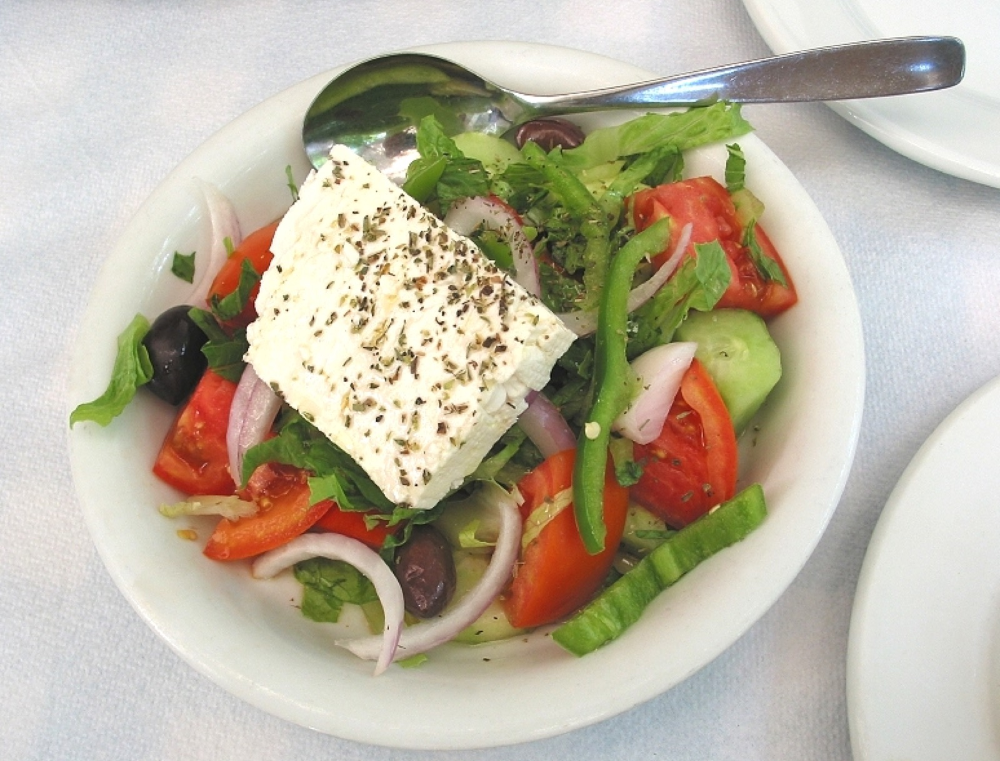

Kısa cevap
Yoğurt, çörek otu, sarımsak, limon ya da sirke ile yapılan karışımlar popülerdir; fakat bunların çoğu için tedavi düzeyinde kanıt sınırlıdır. Karışımın doğal olması otomatik olarak güvenli veya etkili olduğu anlamına gelmez.
- Zeytinyağı beslenmede değerli olabilir; ama ilaç ya da tedavi yerine geçmez.
- Popüler karışım tarifleri için güçlü kanıt çoğu zaman sınırlıdır.
- Günlük miktar belirlerken porsiyon ve toplam enerji dengesi hesaba katılmalıdır.
- Uzayan şikayetlerde internetteki öneriler yerine klinik değerlendirme gerekir.
Kuru incir ve zeytinyağı faydaları için internette dolaşan önerilerin önemli bir kısmı klinik tedavi yerine geçmez. Şikayetiniz sürüyorsa veya hassas bir bölgede uygulama düşünüyorsanız doktor ya da eczacı görüşü alın.


Araştırma neyi destekliyor?
Zeytinyağının doymamış yağ içeriği ve Akdeniz tipi beslenmedeki yeri iyi bilinir. Buna karşın öksürükten böbrek taşına kadar uzanan geniş halk önerilerinin çoğu, aynı güçte klinik desteğe sahip değildir.
Bu nedenle kullanıcı için en yararlı çerçeve; beslenme değeri olan iddia ile tedavi vaadi arasındaki çizgiyi net görmektir.
Parent keyword bağlamı
Kuru incir ve zeytinyağı faydaları sorgusu veri setinde bağımsız bir niyet taşıyor. Bu tür sorgularda kullanıcı genellikle önce hızlı cevabı, ardından aynı konu çevresindeki seçim ve kullanım detaylarını görmek ister.
Bu rehber bu yüzden önce net yanıtı verir, ardından karar vermeyi kolaylaştıran pratik kontrol noktalarını sıralar.
- Sağlık niyetli sorgular parent keyword ile birlikte daha geniş bir karar ihtiyacına dönüşür.
- Kullanıcılar çoğu zaman önce fayda sorusunu, sonra güvenlik ve miktar sorusunu sorar.
- Bu rehber her iki soruyu aynı sayfada karşılar.
Uygulamada nerede abartı başlar?
Boş mideye içmek, karışım hazırlamak veya belirli bir şikayeti çözmek için tek başına zeytinyağına yüklenmek çoğu zaman beklentiyi gereksiz yükseltir. Özellikle kronik şikayetlerde bu yaklaşım gerçek tedaviyi geciktirebilir.
Faydayı sürdürülebilir hale getiren şey, zeytinyağını bütün bir beslenme ve yaşam tarzı çerçevesine yerleştirmektir.
- Miktarı ölçerek kullanın.
- Şikayeti tedavi etmek için değil, beslenmeyi iyileştirmek için düşünün.
- Belirti sürüyorsa profesyonel destek alın.
Günlük kullanım için daha güvenli yaklaşım
Zeytinyağını salata, kahvaltı, sebze yemeği veya kontrollü sıcak kullanım içinde değerlendirmek, onu bir mucize reçete gibi kullanmaktan daha gerçekçidir.
Karışım sorgularında ise özellikle çiğ, alerjen veya mideyi zorlayabilecek bileşenleri birlikte kullanırken daha temkinli olmak gerekir.
- Bu içerik doğrudan sorgu niyetine cevap verecek şekilde kurgulandı.
Sık Sorulan Sorular
Zeytinyağı tek başına zayıflatır mı?
Hayır. Sonuç toplam enerji dengesi ve porsiyon yönetimine bağlıdır.
Kabızlıkta işe yarar mı?
Bazı kullanıcılar için yardımcı olabilir; ama kalıcı kabızlıkta temel yaklaşım su, lif, hareket ve gerekirse tıbbi değerlendirmedir.
Öksürükte kullanılabilir mi?
Klinik tedavi yerine geçmez; uzun süren öksürükte değerlendirme gerekir.
Karışım tarifleri güvenilir mi?
Popüler olabilirler; fakat çoğu için güçlü kanıt sınırlıdır ve her bünyeye uygun olmayabilir.